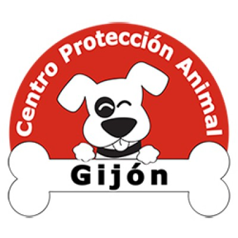
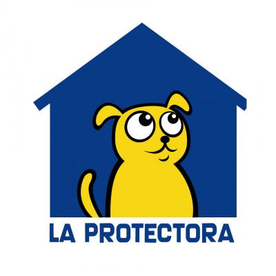
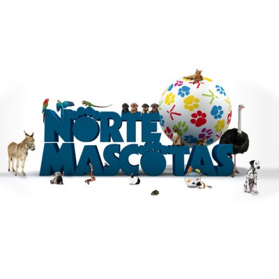
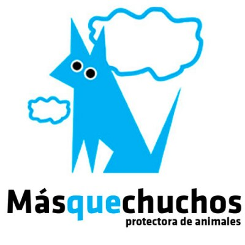
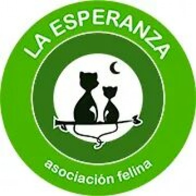

Inicio › Protectoras
Protectoras colaboradoras
Estas son las organizaciones que hay detrás de cada animal en PetFamily. Todas son sin ánimo de lucro, dependen de voluntarios y de personas como tú para seguir adelante.

🐕';">Centro de Protección Animal de Gijón
Gijón, Camino de Liervado S/n (Serín)
Instalación municipal gestionada por la Fundación Protectora de Asturias. Recogen animales perdidos o abandonados en Gijón, les dan atención veterinaria completa y los preparan para la adopción. Tienen especial sensibilidad con animales mayores y de razas PPP, como Leia, que lleva años esperando una oportunidad.

💙';">Fundación Protectora de Asturias
Siero, Asturias
Fundada en 2012 como respuesta al abandono masivo. Trabajan con casas de acogida como base principal y tienen refugio propio en Siero. Todos sus animales se entregan vacunados, esterilizados, con microchip y pasaporte, y el proceso incluye un contrato de adopción con seguimiento posterior.

🐾';">Nortemascotas
Gijón, Pumarín
Asociación sin ánimo de lucro que lucha por los derechos de los animales desde Gijón. Trabajan con voluntarios y casas de acogida particulares, sin instalaciones propias. Su modelo cercano y familiar permite un seguimiento muy personalizado de cada animal. Entre sus casos está Dexter, un Pastor Alemán que lleva casi una década esperando un hogar.

🏠';">MÁS QUE CHUCHOS
Oviedo – Llanera
Nacida en 1993, es una de las protectoras con más trayectoria de Asturias. Han conseguido cientos de adopciones responsables y evolucionaron hasta crear el Centro de Adopción y Empatía Animal, un espacio pensado no solo para cuidar animales, sino también para educar y concienciar a la sociedad. Su lema: el abandono no es una opción.

🐱';">Asociación Felina La Esperanza
Asturias
Asociación especializada exclusivamente en gatos, con especial atención a los casos más difíciles: felinos con enfermedades crónicas como la leucemia felina, gatos de edad avanzada o con necesidades especiales. Su trabajo se centra en darles una vida digna y encontrarles familias comprometidas que entiendan que cuidar de ellos es un acto de amor, no de sacrificio.
No se encontraron protectoras con esos criterios.
Prueba con otro término o elimina los filtros activos.